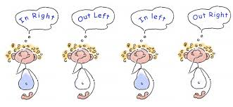

Alternate Nostril Breathing
Welcome!
Nadi Shodhana, or “alternate nostril breathing,” is a simple yet powerful technique that settles the mind, body, and emotions.
With just a few minutes of alternate nostril breathing, you can restore balance and ease in the mind and body.
Click below to begin.

Take a comfortable and tall seat; making sure your spine is straight. Relax your left palm comfortably into your lap and bring your right hand just in front of your face. With your right hand, bring your pointer finger and middle finger to rest between your palm, lightly using them as an anchor. Close your eyes and take a deep breath in and out through your nose.